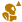
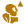
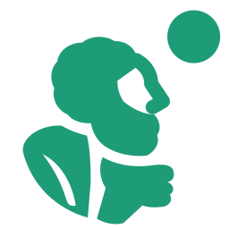
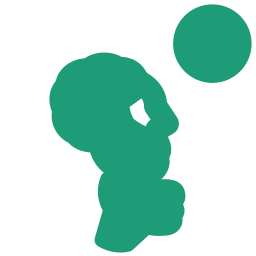
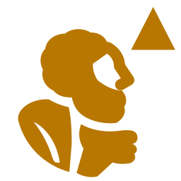
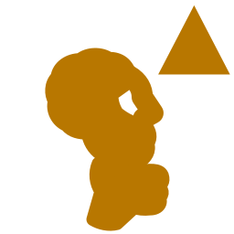
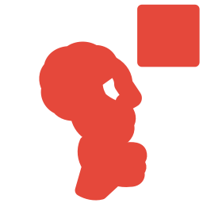

The app glyph (docs/design/icon/aristotle-b2-monochrome.svg) tinted per state, plus a badge in a different shape per state (circle, triangle, square), so state is never colour alone. 16 px is a separate, heavier drawing: head and hand only, thicker strokes, bigger badge. Pixels below are the real PNGs the tray embeds, shown 1:1; the right two columns are enlarged for inspection. Each tint is at least 3:1 against both panels (green 3.03 / 3.53, amber 3.24 / 3.30, red 3.46 / 3.09; light / dark).
| 16 px | 22 px | 24 px | 32 px | 16 px ×4 | 32 px ×2 | |
|---|---|---|---|---|---|---|
| Green Server running, Hermes reachable | ||||||
| Amber Server up, Hermes unreachable |  |  | ||||
| Red Server down, not installed, version mismatch |
| 16 px | 22 px | 24 px | 32 px | 16 px ×4 | 32 px ×2 | |
|---|---|---|---|---|---|---|
| Green Server running, Hermes reachable | ||||||
| Amber Server up, Hermes unreachable | ||||||
| Red Server down, not installed, version mismatch |





Honest reading: at 16 px the circle and square differ by only a few pixels; the triangle is distinct. Colour and badge position carry state there, and the final check is the real panel (D19-5).